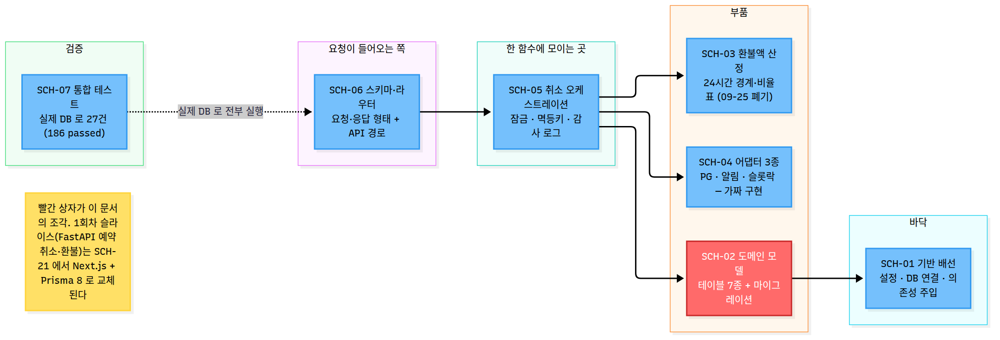

🗂️ SCH-02 왕초보 완벽분석가이드 — 도메인 모델 7개 + 초기 마이그레이션
이 프로젝트가 실제로 다루는 데이터(학원, 수업, 주문, 결제, 예약, 환불)를 처음으로 테이블로 정의합니다. SCH-01(기반 배선)이 설명한 개념은 반복하지 않고 여기서는 새로 나오는 개념만 설명합니다.
이 가이드는 2026-09-15 에 끝난 작업의 기록이다. 1~5절은 그때 쓴 그대로 둔다. 헤맨 과정도 배울 거리라서다. 지금 사정은 이 상자에 모았다.
- 이 코드는 교체된다. SCH-21(FastAPI→Next.js 전환)이 Next.js + Prisma 8 스키마 계약을 새로 만들고 기존 7테이블을 옮긴다. 이관이 끝나면 사용자 승인을 받아
backend/폴더를 지운다. SCH-21 은 아직 착수 전(대기)이다. - 이어지는 것 — 테이블과 제약. 7개 테이블과 돈을 지키는 제약은 새 스키마로 옮긴다. 이중 환불을 막는 부분 유니크 인덱스(
uq_refunds_reservation_id_active),idempotency_keyUNIQUE, 상태·금액 CHECK, 정원 CHECK, 시간대가 붙은 타임스탬프, append-only 감사 로그 성격이 그렇다(SCH-21 조사 문서_workspace/01_req-analyst_requirements.md§3.6). 부분 유니크 인덱스를 Prisma 스키마 언어로 표현할 수 있는지는 아직 확인하지 않았다 — R3(부분 유니크 인덱스 PSL 표현 미검증). - 이어지지 않는 것.
academies.refund_policy_tiers(학원 환불 비율표 JSONB)는 옮기지 않는다. 2026-09-25 비율표 규칙이 폐기됐다(Q11(환불 방식 변경의 뒤처리) ②). 손으로 쓴 alembic 마이그레이션 파일도 Prisma 마이그레이션으로 바뀐다. 반대로Order(주문)에는 수업료·예매 수수료·합계 CHECK 와 주문 시점 수수료율이 새로 들어간다. - 실제 DB 적용은 끝내 검증하지 못했다. 이 마이그레이션은 오프라인 SQL 생성까지만 확인했다. DB 테스트는 마이그레이션이 아니라
Base.metadata.create_all()로 만든 스키마 위에서 돈다. SCH-21 이 Prisma 마이그레이션으로 다시 검증한다. - 테스트 실측. 2026-09-26
uv run pytest -q결과 159 passed · 27 skipped. Docker Desktop 이 꺼져 있어 DB 테스트 27개가 skip 됐다. DB 를 켠 2026-09-23 에는 186 passed 였다. - 5~7절에 나오는 SCH-11(마이그레이션 검증)·SCH-12(DB 통합 테스트)는 없어졌다. SCH-11(마이그레이션 검증)·SCH-12(DB 통합 테스트)는 SCH-21 의 완료 기준으로 흡수됐다. 번호는 다시 쓰지 않는다.
1. 개요
SCH-02(도메인 모델 7개 + 초기 마이그레이션)는 이 프로젝트의 실제 데이터 모델 7개(Academy 학원, ClassSchedule 수업 시간표, Order 주문, Payment 결제, Reservation 예약, Refund 환불, RefundEvent 환불 감사 로그)를 SCH-01(기반 배선)이 만든 Base 위에 올리고, 이 7개 테이블을 실제 PostgreSQL에 만드는 초기 마이그레이션 파일 1개를 손으로 작성한 SCH입니다.
흥미로운 점은, 착수 시점에 이미 5개 모델(Academy, ClassSchedule, Order, Payment, Reservation)이 코드로 존재하고 있었다는 것입니다(이전 실행이 중단된 흔적으로 추정). SCH-02(도메인 모델 7개 + 초기 마이그레이션)가 실제로 새로 만든 것은 Refund·RefundEvent 2개 모델과, 7개 테이블 전체를 만드는 마이그레이션 파일입니다.

2. 사전 개념
ORM/Base/TimestampMixin/Alembic·target_metadata 기본 개념은 SCH-01(기반 배선)에서 설명함. 여기서는 SCH-02(도메인 모델 7개 + 초기 마이그레이션)에서 새로 나오는 개념만 설명합니다.
CHECK 제약이 뭔가요?
컬럼에 들어갈 수 있는 값의 범위나 허용 목록을 DB 스스로가 강제하는 규칙입니다. 애플리케이션 코드가 검증을 깜빡하거나 버그가 있어도, DB가 마지막 방어선 역할을 합니다. 예를 들어 refunds.status 컬럼에는 이런 CHECK가 붙어 있습니다.
CheckConstraint(
"status IN ('succeeded', 'pending', 'failed')",
name="ck_refunds_status",
)이 제약 덕분에 status에 'success'(오타)나 'done' 같은 값을 넣으려고 하면, 애플리케이션 코드가 실수했더라도 DB가 INSERT/UPDATE 자체를 거부합니다. 참고로 이 프로젝트는 상태값에 PostgreSQL의 네이티브 ENUM 타입 대신 VARCHAR + CHECK 조합을 쓰기로 했는데, 그 이유는 네이티브 ENUM은 나중에 값을 하나 빼는 것이 사실상 불가능하고 alembic autogenerate가 ENUM 값 변경을 잘 감지하지 못하기 때문입니다. VARCHAR + CHECK는 나중에 값 집합을 바꿀 때 CHECK 제약만 바꾸는 마이그레이션 1건이면 충분합니다.
UNIQUE 제약과 partial unique index(조건부 유니크 인덱스)가 뭔가요?
일반 UNIQUE 제약은 "이 컬럼(또는 컬럼 조합) 값은 테이블 전체에서 절대 중복되면 안 된다"는 규칙입니다. 그런데 그냥 UNIQUE(reservation_id)를 걸면 문제가 생깁니다 — 환불이 한 번 실패하면 그 예약에 대한 환불 행이 영원히 1건으로 묶여서, 실패를 재시도할 새 행을 만들 수 없게 됩니다.
그래서 Refund 모델은 partial unique index(조건부 유니크 인덱스)를 씁니다.
Index(
"uq_refunds_reservation_id_active",
"reservation_id",
unique=True,
postgresql_where=text("status <> 'failed'"),
)postgresql_where 조건이 붙으면 "그 조건을 만족하는 행끼리만" 유니크를 검사합니다. 여기서는 "status가 'failed'가 아닌 행끼리만" 유니크를 걸었기 때문에, 실패한 환불 건은 그대로 남겨두고 새 시도 행을 추가로 넣을 수 있습니다. 반면 진행중(pending)이나 성공(succeeded) 상태의 환불은 같은 예약에 대해 최대 1건으로 제한됩니다 — 이것이 이중 환불을 DB 차원에서 구조적으로 막는 지점입니다.
JSONB 컬럼이 뭔가요?
일반 컬럼은 값 하나에 타입 하나(문자열, 정수 등)가 고정되지만, JSONB는 JSON 형태의 임의 구조(중첩된 객체, 배열 등)를 그대로 저장할 수 있는 PostgreSQL 전용 컬럼 타입입니다. 이 프로젝트에서는 academies.refund_policy_tiers(학원마다 다른 환불 비율표, 배열 형태)와 refund_events.payload(이벤트 종류마다 다른 필드를 담는 자유 형식 데이터)에 씁니다. 미리 컬럼 구조를 딱딱하게 정해두기 애매한 데이터를 다룰 때 유용합니다.
FK(외래키, Foreign Key)가 뭔가요?
어떤 컬럼이 다른 테이블의 실제로 존재하는 행만 가리키도록 DB가 보장하는 제약입니다. 예를 들어 refunds.reservation_id는 reservations.id를 가리키는 FK입니다.
reservation_id: Mapped[uuid.UUID] = mapped_column(
UUID(as_uuid=True),
ForeignKey("reservations.id", ondelete="CASCADE", name="fk_refunds_reservation_id"),
nullable=False,
index=True,
)존재하지 않는 reservation_id로 환불 행을 만들려고 하면 DB가 거부합니다. ondelete="CASCADE"는 "그 예약 행이 삭제되면, 이 환불 행도 자동으로 같이 삭제해라"는 뜻입니다.
append-only(추가 전용) 감사 로그 패턴이 뭔가요?
한 번 쓴 행을 절대 UPDATE·DELETE하지 않고 상태가 바뀔 때마다 새 행을 INSERT만 하는 테이블 설계입니다. "언제 무슨 일이 있었는지" 이력을 그대로 남겨야 하는 감사 로그에 씁니다. RefundEvent가 이 패턴을 따릅니다 — 그리고 바로 이 이유로 SCH-01(기반 배선)의 TimestampMixin을 일부러 상속하지 않습니다.
class RefundEvent(Base): # TimestampMixin을 쓰지 않음
...
created_at: Mapped[datetime] = mapped_column(
DateTime(timezone=True), server_default=func.now(), nullable=False,
)TimestampMixin은 created_at과 updated_at을 함께 주는데, updated_at 컬럼이 있으면 "이 행은 나중에 고쳐질 수도 있다"는 인상을 줍니다. 그래서 RefundEvent는 updated_at 없이 created_at만 직접 선언해서, 컬럼 목록만 봐도 "이 테이블은 append-only다"라는 설계 의도가 드러나게 만들었습니다.
마이그레이션 리비전 파일 구조가 뭔가요?
Alembic 자체의 개념(무엇이고 왜 쓰는지)은 SCH-01(기반 배선)에서 설명함. 여기서는 리비전 파일 한 개의 내부 구조를 설명합니다. backend/alembic/versions/0001_initial_domain.py 파일 상단은 이렇게 생겼습니다.
revision: str = "0001_initial_domain"
down_revision: str | None = None
branch_labels: str | Sequence[str] | None = None
depends_on: str | Sequence[str] | None = Nonerevision은 이 파일 자신을 가리키는 ID이고, down_revision은 "이 리비전이 적용되기 직전에 DB가 있어야 하는 리비전"입니다. Alembic은 모든 리비전 파일의 이 두 값을 이어서 체인(연결 리스트)을 만들고 그 순서대로 적용합니다. 이 파일은 down_revision = None이라 체인의 첫 번째 리비전입니다. 실제로 DB에 CREATE TABLE 같은 SQL(DDL)을 실행하는 곳은 파일 안의 upgrade()/downgrade() 두 함수뿐이고, 위 4개 변수는 Alembic이 "다음에 어느 리비전을 실행할지" 순서를 찾는 데만 쓰입니다.
alembic revision --autogenerate 명령이 모델과 DB의 차이를 비교해서 자동 생성합니다. 그런데 SCH-02(도메인 모델 7개 + 초기 마이그레이션)는 이 파일을 손으로 직접 작성했습니다 — 이유는 4절에서 설명합니다.
3. 무엇을, 왜 이렇게 만들었나
| 파일 | 구분 | 무엇을 왜 |
|---|---|---|
backend/app/models/refund.py |
신규 | Refund 모델. idempotency_key UNIQUE(명명) + partial unique index로 이중 환불 방지 2겹, status/reason CHECK, 금액·basis point 범위 CHECK 4종, 환불계좌 3컬럼, PG 연동 필드. |
backend/app/models/refund_event.py |
신규 | RefundEvent append-only 감사 로그. TimestampMixin을 의도적으로 쓰지 않음(2절). payload JSONB, 기본값 {}. |
backend/app/models/__init__.py |
수정 | 7개 모델 전부 re-export(Academy, ClassSchedule, Order, Payment, Reservation, Refund, RefundEvent) + Base/TimestampMixin. |
backend/alembic/versions/0001_initial_domain.py |
신규 | 손작성 초기 리비전. down_revision=None(체인의 첫 리비전). upgrade 17문(테이블 7개 + 인덱스 10개), downgrade는 정확히 역순 17문. |
왜 이미 있던 모델 5개를 손대지 않았나
academy.py·class_schedule.py·order.py·payment.py·reservation.py 5개는 작업 착수 시점에 이미 작성돼 있었습니다. SCH-02(도메인 모델 7개 + 초기 마이그레이션)는 이 5개 파일을 전부 읽어서, 공유 계약(다른 SCH와 미리 합의한 값 집합·CHECK 제약·JSONB 기본값)과 정확히 일치하는지 확인했고, 일치했기 때문에 수정하지 않았습니다. 임의로 덮어쓰면 병렬로 진행 중이던 다른 작업의 산출물을 실수로 지울 위험이 있다고 판단한 것입니다. 이번 SCH가 실제로 새로 만든 것은 refund.py·refund_event.py 2개뿐입니다.
왜 idempotency_key UNIQUE에 이름을 직접 붙였나
UniqueConstraint("idempotency_key", name="uq_refunds_idempotency_key")처럼 이름을 명시했습니다. 만약 이름 없이 mapped_column(..., unique=True)로만 쓰면 PostgreSQL이 refunds_idempotency_key_key 같은 이름을 자동으로 붙이는데, 손작성 마이그레이션이 다른 이름을 쓰면 나중에 SCH-11(마이그레이션 up/autogenerate-빈diff/down 검증)의 "autogenerate 빈 diff" 완료 기준이 깨집니다(모델과 마이그레이션이 실질적으로 같은 제약이어도 이름이 다르면 alembic이 "차이가 있다"고 판단하기 때문). 반대로 Primary Key에는 일부러 이름을 붙이지 않았습니다 — 모델도 PK를 명명하지 않으므로, 마이그레이션만 명명하면 alembic upgrade로 만든 스키마와 SCH-07(conftest + DB 통합 테스트 작성)의 conftest가 Base.metadata.create_all()로 만드는 스키마의 제약 이름이 서로 어긋나기 때문입니다.

4. 이슈 → 원인 파악 → 해결
4.1 [수정함] 이름 없는 UNIQUE 제약이 autogenerate diff를 유발할 뻔했다
현상: 초안 코드는 idempotency_key에 mapped_column(..., unique=True)만 썼다.
원인: 이렇게 쓰면 제약에 이름이 안 붙어서 PostgreSQL이 자동으로 refunds_idempotency_key_key라는 이름을 부여하는데, 손작성 마이그레이션 파일이 이와 다른 이름을 쓰면 "실제로는 같은 제약인데 이름이 달라서" autogenerate가 차이가 있다고 오판한다.
해결: UniqueConstraint("idempotency_key", name="uq_refunds_idempotency_key")로 명시적으로 이름을 붙여 모델과 마이그레이션의 제약 이름을 일치시켰다(3절 참고).
4.2 [계획 한계 — 이번 SCH 범위에서 해결 안 함] "환불액이 결제액을 넘을 수 없다"는 CHECK만으로 완결할 수 없다
현상: 애초 계획은 "환불액 상한을 DB CHECK로도 건다"는 것이었다.
원인: PostgreSQL의 CHECK 제약은 다른 테이블(payments.amount)을 참조할 수 없다(2절에서 설명한 한계). Refund 테이블 안에서만 가능한 최대치, 즉 CHECK (refunded_amount <= requested_amount)와 각 금액 >= 0까지만 걸 수 있었다.
해결(이번 SCH 범위 밖): 실제 결제액 대비 상한 검증은 SCH-03(환불액 산정 순수 함수 + 단위테스트)의 환불액 산정 함수(clamp 로직)가 유일한 방어선이다. "DB CHECK와 서비스 로직 이중 방어"라는 계획 서술은 절반만 성립하며, 완료 검증(Phase 9) 단계에서도 이 수용 기준은 "부분 가능"으로 기록됐다.
4.3 [정보 — 문제 아님] class_schedules에 ends_at(종료 시각) 컬럼이 없다
현상: 원래 수용 기준은 "이미 시작했거나 종료된 수업의 취소는 거부한다"인데, 스키마에는 starts_at(시작 시각)만 있고 ends_at이 없다.
원인: 이 스키마 구조는 계획 단계에서 이미 그렇게 정의됐다.
해결: 실무상 "시작 시각이 이미 지났으면 거부"라는 기준이 종료된 수업까지 포함하므로 기능적 구멍은 아니라고 판단해 스키마를 바꾸지 않았다. 다만 이후 SCH가 "종료" 여부를 별도로 판정하려 하면 참조할 컬럼이 없다는 점은 기록해 둔다. starts_at 단일 기준으로 거부하는 것을 권장한다.
4.4 [정보 — 문제 아님] 착수 시점에 모델 5개가 이미 존재했다
현상: 계획 문서는 7개 모델 전부를 [신규]로 표기했지만, 실제로는 2개(Refund, RefundEvent)만 신규였고 나머지 5개는 이미 작성돼 있었다.
원인: 이전에 중단된 실행의 흔적으로 추정된다.
해결: 기존 5개가 공유 계약과 정확히 일치함을 확인만 하고 덮어쓰지 않았다 — 병렬로 진행 중이던 다른 작업의 산출물일 가능성을 배제할 수 없어 임의 수정을 피했다.
5. 테스트로 확인한 것
| 확인한 것 | 결과 | 이게 실제로 증명하는 것 |
|---|---|---|
uv run python -c "from app.models import Base; print(sorted(Base.metadata.tables))" |
['academies', 'class_schedules', 'orders', 'payments', 'refund_events', 'refunds', 'reservations'] (7개) |
7개 모델이 전부 문법 오류 없이 import되고, models/__init__.py의 re-export가 정상 동작해 Base.metadata에 빠짐없이 등록됐다는 것. |
uv run pytest -q |
1 passed, 2 warnings |
새 모델 2개와 __init__.py 수정이 기존 test_health.py를 깨뜨리지 않았다는 것(회귀 없음). |
alembic upgrade head --sql / downgrade 0001_initial_domain:base --sql (둘 다 오프라인, DB 불필요) |
문법 오류 없이 SQL 생성 성공 | 손작성 마이그레이션 파일 자체에 문법 오류가 없다는 것. DB 연결 없이도 SQL을 미리 뽑아볼 수 있다는 SCH-01(기반 배선)에서 설명한 offline 모드를 실제로 활용한 것. |
| 마이그레이션 DDL과 모델 DDL 문자 단위 대조 | 17문 vs 17문, 실질 불일치 0건 (차이 2건은 alembic 주석과 제약 나열 순서뿐, 의미는 동일) | 손으로 작성한 마이그레이션이 app/models/*의 선언과 실제로 정확히 일치한다는 것 — "손작성이라 실수했을 위험"을 실측으로 지웠다. |
| downgrade 역순 완전성 확인 | DROP INDEX 10 + DROP TABLE 7 = upgrade가 만든 전 객체 | downgrade()가 upgrade()가 만든 모든 것을 빠짐없이 되돌린다는 것. CHECK·FK·UNIQUE 제약은 테이블에 귀속되므로 DROP TABLE이 함께 제거한다. |
alembic revision --autogenerate가 정말로 "빈 diff"(추가 변경사항 없음)를 내는지, downgrade base까지 왕복이 실제로 되는지는 이번 SCH에서 검증하지 못했습니다. Docker(kdance-db)가 꺼져 있었기 때문입니다. 이 실행 검증은 SCH-11(마이그레이션 up/autogenerate-빈diff/down 검증)의 몫입니다.마찬가지로 CHECK 제약이 실제로 잘못된 값을 거부하는지, partial unique index가 실제로 중복 INSERT를 막는지 같은 제약의 실동작도 이번 SCH에서는 확인하지 못했습니다. 이건 SCH-12(DB 통합 테스트)에서만 실측 가능합니다.
(2026-09-26 주: SCH-11(마이그레이션 검증)·SCH-12(DB 통합 테스트)는 폐기됐다. 마이그레이션의 실제 적용 검증은 SCH-21(FastAPI→Next.js 전환)이 Prisma 마이그레이션으로 다시 한다.)

6. 다른 SCH와의 연관관계
(2026-09-26 주: 아래 그림은 1회차 슬라이스(FastAPI 예약 취소·환불) 당시의 흐름이다. SCH-01(기반 배선)~SCH-10(환불 정책 문서)은 모두 끝났고 이 코드 전체는 SCH-21(FastAPI→Next.js 전환)에서 교체된다. SCH-11·SCH-12 는 폐기돼 SCH-21 의 완료 기준으로 들어갔다.)
완료
완료
완료
폐기 · SCH-21 에 흡수
| 관계 | 왜 이 순서/관계인가 |
|---|---|
| SCH-01(기반 배선) → SCH-02(도메인 모델 7개 + 초기 마이그레이션) (선행) | Base·TimestampMixin이 없으면 Refund·RefundEvent 클래스를 정의할 부모가 없다. |
| SCH-02(도메인 모델 7개 + 초기 마이그레이션) → SCH-03·04 (후속) | 환불 산정 함수(SCH-03)와 어댑터(SCH-04)가 다루는 Refund·Payment 등 테이블 구조가 이 SCH에서 확정된다. |
| SCH-02(도메인 모델 7개 + 초기 마이그레이션) → SCH-05·06 (간접 후속) | 취소 오케스트레이션 서비스(SCH-05)와 API 스키마·라우터(SCH-06)가 이 7개 모델을 직접 다룬다. |
| SCH-02(도메인 모델 7개 + 초기 마이그레이션) → | 이 SCH가 손으로 작성한 마이그레이션이 실제 DB 위에서 진짜로 동작하는지(upgrade/autogenerate 빈 diff/downgrade)를 최종 확인하는 것이 SCH-11이다. SCH_kdance.html에도 "SCH-11 — SCH-02 선행 충족"으로 기록돼 있다. (2026-09-26 주: SCH-11 은 실행되지 않고 폐기됐다. SCH_kdance.html 2026-09-26 판에는 이 기록이 없다. 검증은 SCH-21(FastAPI→Next.js 전환)의 완료 기준으로 흡수됐다.) |
| SCH-02(도메인 모델 7개 + 초기 마이그레이션) → | CHECK·partial unique index 같은 제약의 실동작 검증은 실제 DB가 있어야 하는 SCH-12의 몫이다. (2026-09-26 주: SCH-12 는 폐기됐다. DB 통합 테스트는 SCH-07(통합 테스트 작성)이 만들었고 2026-09-23 DB 를 켜고 186 passed 를 확인했다. 새 스택의 DB 통합 테스트는 SCH-21 의 완료 기준이다.) |
| SCH-02(도메인 모델 7개 + 초기 마이그레이션) → SCH-21(FastAPI→Next.js 전환) | 7개 테이블과 제약을 Prisma 8 스키마 계약으로 옮긴다. 비율표 컬럼(refund_policy_tiers)은 빼고 Order(주문)에 수업료·예매 수수료·합계 CHECK 와 주문 시점 수수료율을 처음부터 넣는다. |
7. 다음 SCH로 이어지는 것
- SCH-03(환불 산정 함수)에게: "환불액이 결제액을 넘을 수 없다"는 규칙은 DB CHECK가
refunded_amount <= requested_amount까지만 강제하고 결제액(payments.amount) 대비 상한은 CHECK로 표현할 수 없다(4.2절). 산정 함수의 clamp 로직이 이 상한을 지키는 유일한 방어선이라는 점을 반드시 알아야 한다. (2026-09-26 주: SCH-03 의 산정 함수는 폐기돼 옮기지 않는다. 그래도 이 상한은 남는다 — 대표가 환불액을 입력하는 FR-293(대표 환불 입력)도 "결제액을 넘을 수 없다"고 정한다. 새 스택에서는 이 상한을 어디서 막을지 다시 정해야 한다.) - SCH-07(conftest)에게: 마이그레이션의 Primary Key에는 이름을 붙이지 않았다(모델과 일치시키기 위해).
Base.metadata.create_all()로 테스트 스키마를 만들 때 이 점이alembic upgrade결과와 제약 이름 수준까지 일치해야 한다. - SCH-11(마이그레이션 실적용)에게: 이번 SCH는 SQL 생성까지만 검증했다.
upgrade head실제 실행,--autogenerate빈 diff 확인,downgrade base왕복은 전부 SCH-11이 Docker를 켠 뒤 처음으로 실행해야 한다. (2026-09-26 주: SCH-11 은 폐기됐다. 이 왕복 검증은 끝내 하지 않았고 SCH-21(FastAPI→Next.js 전환)이 Prisma 마이그레이션으로 대신한다.) - SCH-12(DB 통합 테스트)에게: CHECK 제약 위반 시 실제로 INSERT가 거부되는지, partial unique index가 실제로 중복을 막는지는 이번 SCH에서 검증하지 못했다. 실제 DB를 띄운 뒤 이 제약들의 실동작을 처음 확인하는 것이 SCH-12다. (2026-09-26 주: SCH-12 는 폐기돼 SCH-21 의 완료 기준으로 흡수됐다.)
- SCH-21(FastAPI→Next.js 전환)에게: 4.2절의 "CHECK 로 표현할 수 없는 상한"과 이름 붙인 제약(3절)은 Prisma 스키마로 옮길 때 다시 따져야 한다. 특히 부분 유니크 인덱스가 빠지면 이중 환불을 DB 가 막지 못한다 — R3(부분 유니크 인덱스 PSL 표현 미검증).
- 후속 SCH 전반에게:
class_schedules에는ends_at컬럼이 없다(4.3절). "종료" 여부를 별도로 판정해야 하는 로직이 필요하면starts_at단일 기준으로 처리해야 한다.